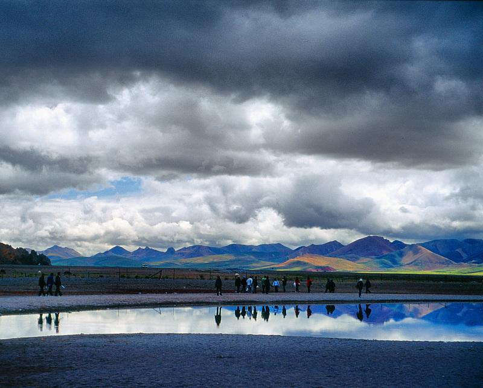

哈斯2014-06-26 22:254.5 分
性价比 4.50色彩还原 5.00分辨率 5.00锐利度 4.50颗粒度 5.00反差 5.00色饱和度 5.00宽容度 3.50倒易率允许 3.00
柒郎2014-01-19 15:343 分
性价比 3.00色彩还原 3.00分辨率 3.00锐利度 3.00颗粒度 3.00反差 3.00色饱和度 3.00宽容度 3.00倒易率允许 3.00
正好而已2012-10-16 14:343.61 分
性价比 0.50色彩还原 4.50分辨率 4.00锐利度 4.00颗粒度 4.00反差 4.00色饱和度 4.50宽容度 4.50倒易率允许 2.50
ecloud2010-12-14 21:274.67 分
性价比 5.00色彩还原 4.00分辨率 5.00锐利度 5.00颗粒度 4.00反差 5.00色饱和度 5.00宽容度 4.50倒易率允许 4.50
Luft2010-10-23 11:474.11 分
性价比 4.00色彩还原 4.50分辨率 4.00锐利度 4.50颗粒度 3.00反差 4.00色饱和度 5.00宽容度 4.00倒易率允许 4.00
siliconworm2010-10-21 20:34

siliconworm2009-09-26 12:364.83 分
性价比 5.00色彩还原 5.00分辨率 4.50锐利度 4.50颗粒度 4.50反差 5.00色饱和度 5.00宽容度 5.00倒易率允许 5.00
reffni2008-12-07 21:404.11 分
性价比 3.00色彩还原 3.50分辨率 4.50锐利度 4.50颗粒度 5.00反差 3.50色饱和度 5.00宽容度 3.50倒易率允许 4.50
hunter06182008-06-11 21:344.33 分
性价比 4.00色彩还原 4.00分辨率 4.50锐利度 4.50颗粒度 4.50反差 4.50色饱和度 4.50宽容度 4.00倒易率允许 4.50
迅2007-12-10 22:144.89 分
性价比 4.00色彩还原 5.00分辨率 5.00锐利度 5.00颗粒度 5.00反差 5.00色饱和度 5.00宽容度 5.00倒易率允许 5.00